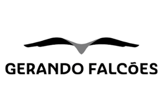
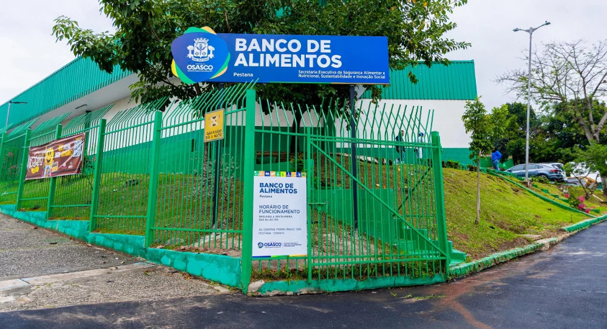
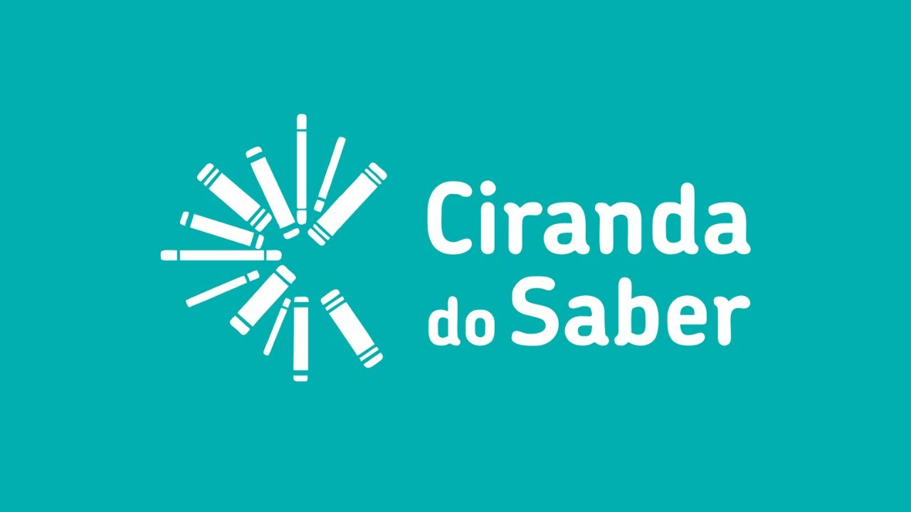

Sobre nos
Nosso site foi criado para facilitar a busca por pontos de doação, conectando pessoas que querem ajudar a locais que recebem doações. Nele, é possível encontrar pontos próximos, consultar quais itens são aceitos e entender como funciona o processo de doação. Dessa forma, tornamos mais fácil contribuir com a comunidade e incentivar a solidariedade.
Faça uma Doação

Doação de Roupas
A doação de roupas é uma forma simples de ajudar pessoas que precisam. Roupas em bom estado podem ser reutilizadas por famílias em situação de necessidade, promovendo solidariedade, sustentabilidade e evitando o desperdício.

Doação de Comida
A doação de comida é uma forma de ajudar pessoas que enfrentam dificuldades para ter acesso a uma alimentação adequada. Ao compartilhar alimentos, contribuímos para reduzir o desperdício e fortalecer a solidariedade na comunidade.

Doação de Outros
A doação de outros itens, como brinquedos, materiais escolares e produtos de higiene, é uma forma de contribuir com quem precisa. Além de ajudar famílias e comunidades, essas doações incentivam a solidariedade e o reaproveitamento de recursos.
Ong's com foco em doação

Rede Gerando Falcões / Asmara
- Contato: (11) 3426-9800
- Endereço: Av. Washington Luiz Pereira de Souza, 208 – Cidade Kemel, Poá - SP

Banco de Alimentos de Osasco
- Contato: (11) 3654-4585.
- Endereço: Av. General Pedro Pinho, 1340 – Pestana

Projeto Ciranda do Saber
- Endereço: Av. Novo Osasco, 1076 – Bussocaba.
- Horário: Segunda a sexta-feira, das 8h às 18h.